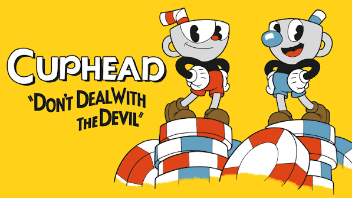
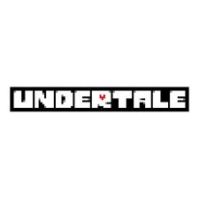
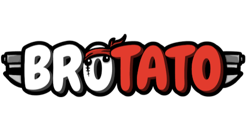
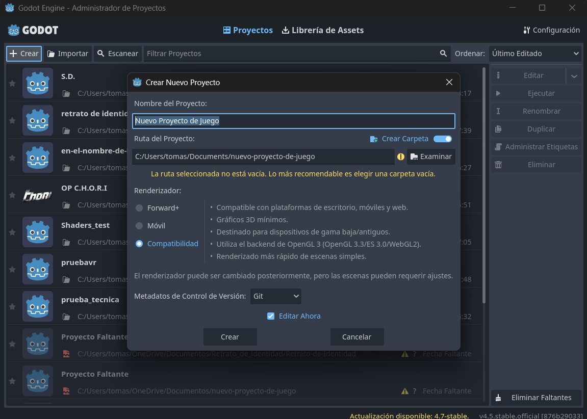
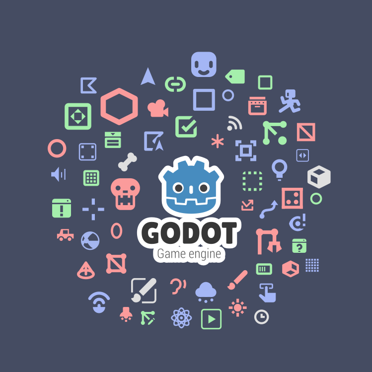

Primeros pasos con Godot Engine
Qué es un motor de videojuegos, cómo se estructura un proyecto y por qué en Godot todo es un nodo.
“Hoy no van a aprender todo, pero sí van a entender cómo pensar dentro del motor.”
Qué necesitás para la clase de hoy
Traé
- Tu notebook (cualquiera sirve, Godot es liviano)
- Cargador y ganas de romper cosas
- Conexión para descargar el editor
Descarga
- Sitio oficial:
godotengine.org - Versión Godot 4.x — estándar (GDScript)
- Sin instalador, sin cuenta: se descomprime y abre
Qué vamos a hacer hoy
- Entender qué es un motor de videojuegos
- Instalar Godot y recorrer su interfaz
- El concepto clave: nodos y escenas
- Armar tu primera escena con nodos

¿Qué es un motor de videojuegos?
Un software que reúne, en un solo entorno, todo lo necesario para crear un juego: gráficos, físicas, audio, entrada del jugador, animación, scripting y exportación.
Sin motor
- Escribir código para dibujar un solo píxel
- Detectar colisiones entre dos rectángulos
- Reproducir un sonido desde cero… lleva años
Con motor
- Todo eso ya está resuelto
- Te concentrás en el juego en sí
- Reglas, niveles, la experiencia
Motores populares
Unity
C#, muy usado en la industria. Gratis hasta cierto nivel de ingresos.

Unreal
Gráficos AAA, C++ y Blueprints. Royalties sobre ingresos.
GameMaker
Orientado a 2D, con su lenguaje propio (GML).

Godot ★
Open source, gratis, sin royalties. El que vamos a usar.

¿Por qué Godot para empezar?
Gratis y libre
Open source, sin royalties ni licencias. Nada te frena para publicar.
Liviano
Corre en máquinas modestas. El editor pesa menos de 100 MB.
Curva amable
Su sistema de nodos es uno de los modelos mentales más claros que existen.
Descarga y primer contacto
Se descarga de godotengine.org. Es un único ejecutable: no hay instalador, ni registro, ni cuenta. Lo descomprimís y lo abrís.
| Versión / sabor | Qué es | Cuándo |
|---|---|---|
| Godot 4.x | Versión actual, mejor render 3D y nuevas funciones | ✅ La que usamos |
| Godot 3.x | Versión anterior, todavía soportada | Mucho material online sigue en 3.x (la sintaxis cambió) |
| Estándar (GDScript) | Lenguaje propio, parecido a Python | ✅ Recomendado para empezar |
| .NET / C# | Además permite programar en C# | Más adelante, si hace falta |
Crear tu primer proyecto
- Abrir Godot → aparece el Project Manager
- Clic en New Project
- Elegir nombre y carpeta
- Dejar el resto por defecto → Create & Edit
- Eso te lleva al editor 🎉

Recorrido por la interfaz

Los cuatro paneles principales
🎬 Viewport (centro)
La ventana grande donde “ves” tu juego. Pestañas arriba para 2D, 3D y editor de Script.
🌳 Escena (arriba izq.)
La jerarquía de nodos en árbol. El panel más importante de Godot — lo profundizamos hoy.
📁 FileSystem (abajo izq.)
Todos los archivos del proyecto. Las rutas internas empiezan con res://.
🔧 Inspector (derecha)
Las propiedades del nodo seleccionado: posición, rotación, color, tamaño… sin escribir código.
Otros elementos y primera práctica
- Barra superior: ▶ Play, Play Scene, pausa y stop
- Panel inferior: consola, errores, animaciones, audio
- Menús: Scene · Project · Debug · Editor · Help
- Sobre todo
Project → Project Settings(resolución, controles, capas físicas)
👐 Práctica guiada
- Agregar un
Sprite2Dcon elicon.svgdel proyecto - Verlo aparecer en el Viewport
- Mover sus propiedades en el Inspector
- Observar cómo se refleja el cambio
El sistema de nodos
Un nodo es la unidad mínima de funcionalidad en Godot. Cada nodo hace una cosa específica.
- Mostrar una imagen
- Reproducir un sonido
- Detectar colisiones
- Recibir input del jugador

Ejemplos, y por qué son como Lego
Sprite2D | Muestra una imagen 2D |
Camera2D | Define qué parte se ve |
AudioStreamPlayer | Reproduce un sonido |
Label | Muestra texto |
CharacterBody2D | Cuerpo físico controlable |
Timer | Dispara un evento cada X tiempo |
🧱 Analogía: piezas de Lego
Cada pieza es simple y hace poco por sí sola. Lo interesante es combinarlas.
Un personaje jugable no es un nodo gigante con todo adentro, sino un cuerpo físico que tiene como hijos un sprite, un colisionador, una cámara, un sonido de pasos…
Escena = un árbol de nodos
Una Escena es un árbol de nodos guardado como archivo (.tscn). No es solo “un nivel”: es cualquier cosa que quieras tratar como unidad reusable.
- Un nivel · el menú principal
- Un enemigo · una bala
- El HUD · hasta un solo botón
Ejemplo: escena Player
Player (CharacterBody2D)
├── Sprite2D
├── CollisionShape2D
├── Camera2D
└── AudioStreamPlayer
Toda escena tiene un nodo raíz, y de ahí cuelgan los demás.
Las escenas son anidables
Una escena puede instanciarse dentro de otra como si fuera un solo nodo. Nivel1 puede contener la escena Player y diez instancias de Enemigo.
Enemigo, todas las instancias en todos los niveles se actualizan solas. En Godot, la escena ES el prefab — no hay distinción (Unity → prefabs, Unreal → blueprints).Reglas de la jerarquía
- El hijo hereda la transformación del padre: movés el padre, se mueven los hijos
- El orden importa en 2D: los de más abajo se dibujan encima
- Cualquier nodo →
Save Branch as Scene
Tres grandes familias
🟦 2D
Para juegos planos: personajes, plataformas, sprites.
🟥 3D
Mundos tridimensionales: cámaras, luces, modelos.
🟩 UI
Interfaz: botones, HUD, menús.
¿Y el código? Un vistazo a GDScript
Los nodos se pueden programar con GDScript, un lenguaje propio muy parecido a Python. No hace falta memorizarlo hoy — solo ver cómo se ve.
_ready()corre al aparecer el nodo_process()corre en cada frame- Se engancha un script a cualquier nodo
extends Sprite2D # Corre una vez, al empezar func _ready(): print("¡Hola, Godot!") # Corre en cada frame func _process(delta): position.x += 100 * delta
Mini práctica integradora
Algo simple pero poderoso: crear una escena con…
1 · Nodo raíz
Un Node2D como base
2 · Elemento visual
Un Sprite2D
3 · Botón UI
Un Button
Lo que nos llevamos de hoy
- Un motor es una caja de herramientas integrada
- Godot tiene 4 paneles: Escena, FileSystem, Inspector, Viewport
- Todo es un nodo; los nodos forman escenas; las escenas se anidan
- Tres familias: 2D, 3D y UI
📝 Tarea para la próxima
- Crear un proyecto nuevo
- Agregar una escena con raíz
Node2D - Sumar al menos 3 tipos de nodos hijos
- Mover, romper, deshacer, leer el Inspector
No tiene que hacer nada funcional: solo familiarizarse con el editor.
Recursos y próximos pasos
Documentación
docs.godotengine.org
Guía oficial, completísima y en varios idiomas.
Descargar
godotengine.org
Godot 4.x estándar. Traelo instalado para la próxima.
Comunidad
Discord y foros oficiales. Miles de tutoriales en YouTube (ojo con la versión).
Logo, mascota (Godette) e ilustraciones de Godot © Godot Foundation — CC BY 4.0. Logos de Unity, Unreal Engine y GameMaker: marcas de sus respectivos dueños, uso educativo.